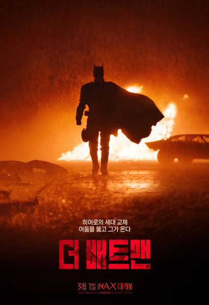

영화
더 배트맨
영웅이 될 것인가 악당이 될 것인가운명을 결정할 선택만이 남았다지난 2년간 고담시의 어둠 속에서 범법자들을 응징하며 배트맨으로 살아온 브루스 웨인. 알프레드와 제임스 고든 경위의 도움 아래, 도시의 부패한 공직자들과 고위 관료들 사이에서 복수의 화신으로 활약한다. 고담의 시장 선거를 앞두고 고담의 엘리트 집단을 목표로 잔악한 연쇄살인을 저지르는 수수께끼 킬러 리들러가 나타나자, 최고의 탐정 브루스 웨인이 수사에 나서고 남겨진 단서를 풀어가며 캣우먼, 펭귄, 카마인 팔코네, 리들러를 차례대로 만난다. 사이코 범인의 미스터리를 수사하면서 그 모든 증거가 자신을 향한 의도적인 메시지였음을 깨닫고, 리들러에게 농락 당한 배트맨은 광기에 사로잡힌다. 범인의 무자비한 계획을 막고 오랫동안 고담시를 썩게 만든 권력 부패의 고리를 끊어야 하지만, 부모님의 죽음에 얽힌 진실이 밝혀지자 복수와 정의 사이에서 갈등한다.선과 악, 빛과 어둠, 영웅과 악당, 정의와 복수.. 무엇을 선택할 것인가
